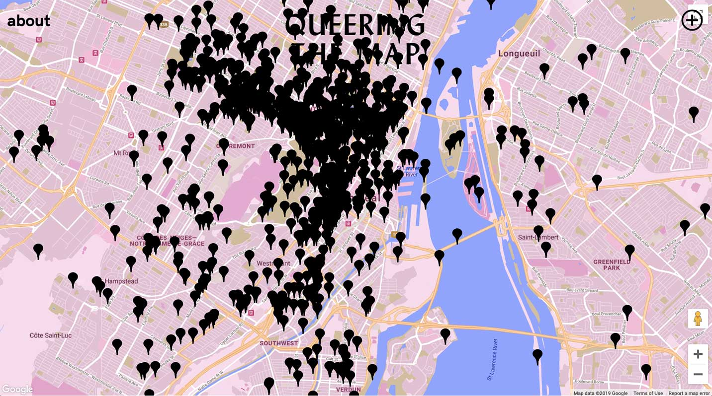

Queering the Map
Go to Site
DESIGN
The design of the website is very fun and welcoming. The combination of the warm tones layered with google maps interface, which we are all so familiar with, really invites and immerses you into what the designer is trying to communicate: a community generated digital counter-mapping project that archives queer moments, memories, and histories in relation to place.
USABILITY
The website is very self-explanatory because of our familiar relationship to digital map interfaces; knowing that scrolling down on the mouse scroll wheel zooms in, and clicking, holding and dragging the left mouse button moves the the map around. It also invites you to add your own description with a large “+” button on the top right corner.
CREATIVITY
“Queering the Map” reflects a contemporary take on digital map interfaces crossed with community generated queer histories. It prompts users to interact with google geo-locations, and archives them into a virtual space. By mapping out queer experience in all of its permutations, “Queering the Map” creates a sense of queer solidarity across difference and across borders.
CONTENT
I really enjoy the content of the website. As a queer person, it is really heartwarming to see other queer experiences recounted in the spaces around me (i.e. direct action activism, feelings of isolation, moments of rapturous love). It also shows traditional definitions of physical space becoming more abstract and blurred.